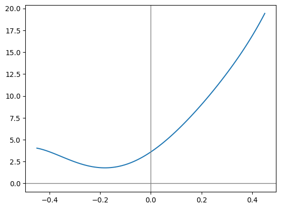
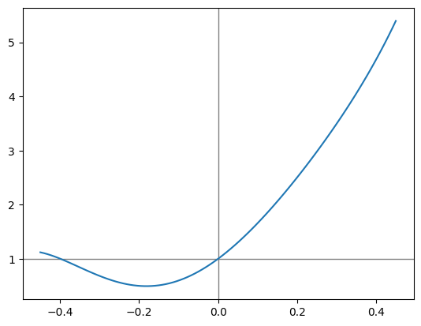
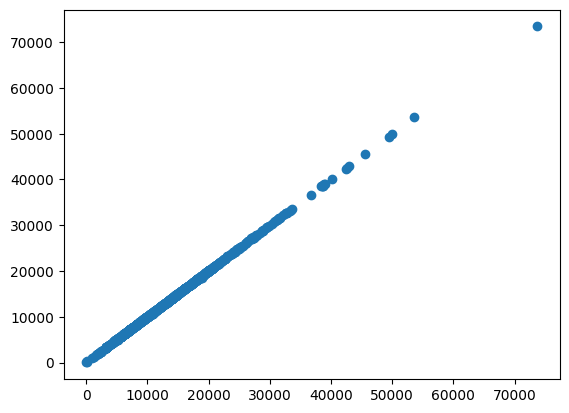
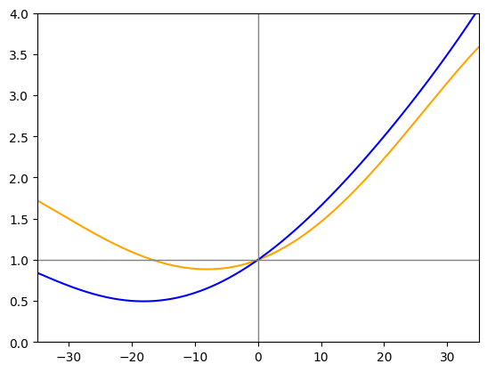
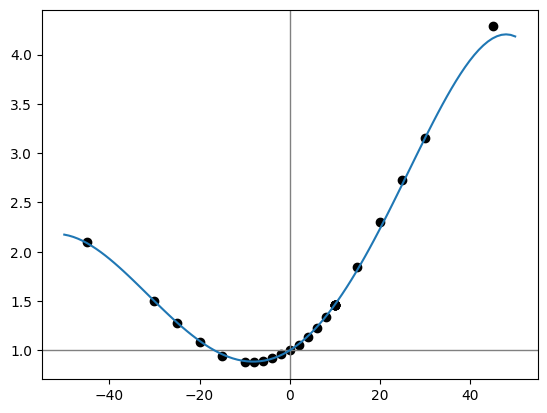

import sys
sys.path.append('../validation')
from common import load_activity_summary_data
from common import load_timeseries_data
import matplotlib.pyplot as plt
import numpy as np
import pandas as pdReverse-engineering Strava’s Grade Adjusted Pace
While exploring my personal activity data lake, I found that Strava seemed to be applying the grade adjustment factor to distance, not to pace. That made me wonder if their conceptual model of “running difficulty” was similar to the “cost of running” model used in [[Minetti (2002)]]. In that paper, the “cost” of running was given in terms of energy consumed by the human body, per unit distance, per unit mass. In other words, the units of this quantity are calories per kilogram per kilometer. When choosing a model to assume for my reverse-engineered product, I figured the simpler the better. The embedded assumptions in this model are: - The cost of running depends on grade, but is independent of speed. - Every person’s cost of running curve looks exactly the same. For a given slope, every person spends the same amount of energy (per unit body mass) to cover a mile.
If either of these assumptions sounds absurd, remember: the cost of running is in terms of body mass and distance covered. In order to model how much energy a person consumes getting from A to B, the cost of running gets multiplied by the individual’s body mass. And in order to determine the individual’s rate of energy consumption, the quantity is divided by time; to cover A to B in a very short time, a very high burn rate is required.
Here is the equation:
\[C_r(i) = 155.4i^5 - 30.4i^4 -43.3i^3 + 46.3i^2 + 19.5i + 3.6\]
from specialsauce.sources.minetti import cost_of_running
gradient_array = np.linspace(-0.45, 0.45, 100)
plt.plot(gradient_array, cost_of_running(gradient_array))
plt.axhline(0.0, color='gray', linewidth=1)
plt.axvline(0.0, color='gray', linewidth=1)<matplotlib.lines.Line2D at 0x7efd7bcac550>
When considering what form to assume for Strava’s grade adjustment factor function, I figured it would be desirable to use the same form as [[Minetti (2002)]]. The general form of that equation is
\[ f(g) = \Sigma_0^5 c_i g^i \]
Just a fifth-order polynomial, where \(g\) is decimal grade.
I have a hunch that Strava’s old Grade Adjusted Pace product was based on using the Minetti equation to compute a ratio of the cost of running on a slope to the cost of running on flat ground:
\[ f(g) = c_r(g) / c_r(0) \]
adjustment_factor_array = cost_of_running(gradient_array) / cost_of_running(0.0)
plt.axhline(1.0, color='gray', linewidth=1)
plt.axvline(0.0, color='gray', linewidth=1)
plt.plot(gradient_array, adjustment_factor_array)
…and I think it would be intuitive to calculate adjusted point-to-point distance like: \[ \Delta x_g = f(g) \Delta x \]
In words, that means that the adjusted distance from A to B is a function of the grade at point A.
I want to fit a similar curve to Strava’s “grade adjustment factor” (my term). So how can I make it happen, using the data I have at my fingertips?
The data
Time series from the Strava API
I have access to all the time series data for my Strava activities, going back to 2019. In this private dataset, there are over 2.5 million samples, each representing an observation recorded on my activity tracker (a GPS watch). Each observation corresponds to a discrete point in time, and contains a number of variables:
panel_ts_df = load_timeseries_data()
panel_ts_df.columnsIndex(['lat', 'lon', 'distance', 'altitude', 'velocity_smooth', 'grade_smooth',
'cadence', 'heartrate', 'temp', 'watts', 'moving', 'type'],
dtype='object')The variable names largely speak for themselves.
Only two of these variables will be used in my analysis. The first, distance, represents cumulative distance traveled from the start of the activity. A bit of rearranging gives me what I am really after: the point-to-point distances between each sample:
delta_x = panel_ts_df['distance'].groupby('id').diff(1).shift(-1)
delta_x.describe()count 2.581882e+06
mean 5.146323e+00
std 6.688147e+00
min 0.000000e+00
25% 1.300000e+00
50% 3.000000e+00
75% 3.900000e+00
max 3.067000e+02
Name: distance, dtype: float64Next, I need to grab a time series that Strava calculates on its backend: grade_smooth. As the name suggests: - This represents grade (terrain slope along the path: \(\Delta y / \Delta x\)). - The time series has also been smoothed in some way. Since grade represents the change in elevation per change in distance, it is sensitive to noisy data.
The grade-smoothing operation is an element of Strava’s special sauce. Until I understand this algorithm (among other secrets), I will be forced to continue uploading my activity data to Strava if I want to see the calculated grade time series. That is irrelevant to this post, but it reflects my long-term ambitions: personal data liberation.
Let’s get back into the data.
grade = panel_ts_df['grade_smooth']
grade.describe()count 2.583119e+06
mean 1.325603e+00
std 1.480232e+01
min -5.000000e+01
25% -3.800000e+00
50% 3.000000e-01
75% 7.300000e+00
max 5.000000e+01
Name: grade_smooth, dtype: float64Note the maximum and minimum values: Strava’s algorithm will never report a grade steeper than 50%. That’s a steepness of 5 meters vertical per 10 meters horizontal. Most terrain does not get that steep, unless you go to the mountains. It looks like I am getting sidetracked again.
Grade Adjusted Distance values from a bulk data download
You know how you can ask for a bulk downloada of all the data you’ve uploaded to apps and services? Strava is no different. And there’s a lot of good stuff in there. What I need is the Grade Adjusted Distance for each activity. Dividing Grade Adjusted Distance by Moving Time yields Grade Adjusted Pace, which is a feature Strava pulled behind their subscription paywall in 2020. Even non-subscribers will see Grade Adjusted Distance in their bulk data download, which really seems like an oversight, but I’ll keep quiet since it facilitates this analysis.
activities_df = load_activity_summary_data()
grade_adjusted_distance = activities_df.set_index('Activity ID')['Grade Adjusted Distance']
grade_adjusted_distance.describe()count 1163.000000
mean 12897.031030
std 7409.794250
min 0.900000
25% 7235.500000
50% 12162.000000
75% 16649.400391
max 73662.101562
Name: Grade Adjusted Distance, dtype: float64Meters are the distance units here. So in terms of Grade Adjusted Distance, my longest activity is 73.6 kilometers (and I won’t soon forget it). And my average is somewhere between 12 and 13 kilometers. That’s apparently my sweet spot!
The method
Linear regression using sklearn
I could go about this a few different ways. I’m choosing to use sklearn because it facilitates a generalizable approach - one not limited to polynomial regressions.
Now I’m going to switch hats and start using the domain language of data science. For each activity in my personal data lake, I’ll engineer a number of features I’ll take the time series containing samples of all the variables measured during the activity as well as those calculated by Strava (the activity’s multivariate time series); then I will do some math on them to produce some scalar values - the features. I am extracting features from the multivariate timeseries. In keeping with the approach of [[Minetti (2002)]], the features will be of the form
\[ ftr_m = \sum\limits_{i=0}^{N_{obs}-1} g_i^m \Delta x(i) \]
Why? Maybe let’s take a step back.
The total distance of an activity is simply the sum of its point-to-point distance time series.
\[ x_g = \sum\limits_0^{N_{obs}-1} \Delta x(i) \]
Similarly, the Grade Adjusted Distance of an activity is the sum of its adjusted point-to-point distance.
\[ x_g = \sum\limits_0^{N_{obs}-1} f(g(i)) \Delta x(i) \]
Since I decided to model the adjustment factor as a polynomial function of grade, this expression becomes
\[ x_g = \sum\limits_{i=0}^{N_{obs}-1} \sum\limits_{j=0}^5 c_j \cdot g^j(i) \cdot \Delta x(i) \]
Remember, all I’m looking to determine in this analysis are the coefficients \(c_{0..5}\). Everything else is in the data I have available: each activity’s Grade Adjusted Distance (\(x_g\)) as well as all the observations in its time series. To make the data linear-regression-ready, I can engineer features of the form:
\[ ftr_m = \sum\limits_{i=0}^{N_{obs}-1} g^m(i) \Delta x(i) \]
…so that for each activity:
\[ x_g = \sum\limits_{j=0}^5 c_j ftr_j \]
…and when all activities are considered, a linear regression problem appears:
\[ \mathbf{x_g} = \mathbf{F} \mathbf{c} \]
…where \(\mathbf{F}\) is the matrix of features that I extract from the activity time series: one row per activity, one column per feature.
There is an unwritten rule that basically says: you have to use these specific variables in data science:
\[\mathbf{y} = \mathbf{X} \mathbf{b}\]
So to summarize this confusing twist: - \(\mathbf{x_g} \rightarrow \mathbf{y}\) (the targets) - \(\mathbf{F} \rightarrow \mathbf{X}\) (the features) - \(\mathbf{c} \rightarrow \mathbf{b}\) (the coefficients)
Please don’t blame me, I am just speaking the vernacular of data science, trying to fit in.
poly_degree = 5
X_raw = pd.concat(
[(delta_x * grade ** i).groupby('id').sum() for i in range(poly_degree + 1)],
axis=1
)y_raw = grade_adjusted_distance.dropna()shared_indices = y_raw.index.intersection(X_raw.index)
X = X_raw.loc[shared_indices, :]
y = y_raw[shared_indices]Now to perform the linear regression itself, where I finally get to figure out the coefficients that give me the best fit.
from sklearn.linear_model import LinearRegression
from sklearn.metrics import mean_squared_errormodel = LinearRegression()
model.fit(X, y)
predictions = model.predict(X)
rmse = mean_squared_error(y, predictions, squared=False)
rmse35.85465857601326For context, the mean and median is on the order of 12000.
The fit’s \(R^2\) value is close to 1.0. Let’s take a look at a scatterplot of my model’s predicted Grade Adjusted Distance values vs. “observations” from my Strava bulk download:
plt.scatter(y, predictions)<matplotlib.collections.PathCollection at 0x7efd724665e0>
It looks like a straight line, right on the diagonal. Now, that isn’t a rigorous vetting of the model, but it is quite encouraging. To me, it validates the underlying assumptions - I’m not missing some major detail of Strava’s secret implementation.
Comparing the result to ground truth
In Strava’s blog post An Improved GAP Model, there is a graph comparing their “improved” grade adjustment factor to their old one based on [[Minetti (2002)]]. I’ll create my own version of this graph, using the two adjustment factor models from my analysis.
gradient_array = np.linspace(-35, 35, 1000)
poly = np.polynomial.Polynomial(model.coef_)
factor_model = poly(gradient_array)
factor_minetti = cost_of_running(gradient_array/100.0) / cost_of_running(0.0)
plt.plot(gradient_array, factor_model, color='orange')
plt.plot(gradient_array, factor_minetti, color='blue')
plt.axhline(1.0, color='gray', linewidth=1)
plt.axvline(0.0, color='gray', linewidth=1)
plt.xlim(-35, 35)
plt.ylim(0, 4)
plt.show()
Look familiar??

Now to compare my model of Strava’s adjustment factor to exact values of the adjustment factor I obtained elsewhere (in a story for another time).
from specialsauce.datasets import load_ngp_gap
df_adjusted_pace = load_ngp_gap()
factor_experiment = df_adjusted_pace['Pace'] / df_adjusted_pace['GAP']
gradient_array = np.linspace(-50, 50, 100)
factor_model = poly(gradient_array)
plt.axhline(1.0, color='gray', linewidth=1)
plt.axvline(0.0, color='gray', linewidth=1)
plt.plot(gradient_array, poly(gradient_array))
plt.scatter(factor_experiment.index, factor_experiment, c='black')
plt.show()
I’ll take it. The model’s most severe deviation from reality occurs at a grade of 45% - the type of extreme slope that tends to be underrepresented in any runner’s fitness history. It makes sense that the model would underperform in a region of training data scarcity.
Conclusion
With such a large number of data points (thanks to 2.5 million discrete samples in my time series history), it was tempting to throw computing power at the problem of reverse-engineering the GAP algorithm. I hope that this post highlights the potential for compute cost savings when a thoughtful modelling approach is adopted.